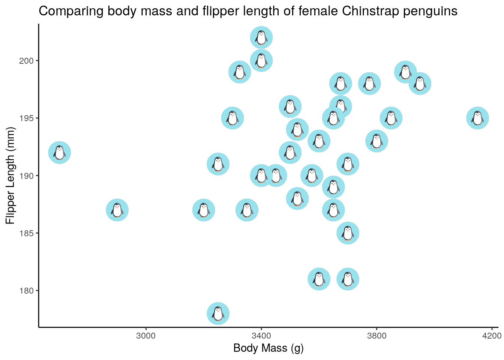

# load libraries
library(palmerpenguins)
library(tidyverse)
# install.packages('rsvg')
# remotes::install_github('coolbutuseless/ggsvg')
library(rsvg)
library(ggsvg)Using Icons in Figures with {ggsvg}
graph aesthetics
Haley Epperly Fox ![]()
Abstract
Learn how to insert icons into your plots using the {ggsvg} package.
Have you ever seen a figure with cute little icons representing data points and thought how you would love to recreate that? I’m here to tell you that you can and the ggsvg package makes it super simple.
All you have to do is:
Load in the
ggsvgpackageFigure out which icon you want to use from the ones available here
Save the url for your chosen icon to read into your gpplot code
Use
geom_point_svgin your ggplot code referencing your saved url (FC 2022)
Let’s run through an example with the palmerpenguins dataset (Horst, Hill, and Gorman 2020). Checkout the package website for some more info and fun artwork! We’re going to subset these data to only include female Chinstrap penguins so that we have fewer data points to plot.
Example
# find the icon you want and save the url for later reference following this format
svg_url <- 'https://www.svgrepo.com/download/133788/penguin.svg'
svg_txt <- paste(readLines(svg_url), collapse = "\n")
# filter the penguin data to only female Chinstrap penguins
chinstrap <- penguins %>%
filter(species == "Chinstrap", sex == "female")
# plot the data with the selected icon used instead of points
ggplot(chinstrap) +
geom_point_svg(aes(body_mass_g, flipper_length_mm), svg = svg_txt) +
labs(x = "Body Mass (g)", y = "Flipper Length (mm)",
title = "Comparing body mass and flipper length of female Chinstrap penguins") +
theme_classic()
References
FC, Mike. 2022. “Ggsvg: SVG Glyphs for Ggplot.” https://github.com/coolbutuseless/ggsvg.
Horst, Allison Marie, Alison Presmanes Hill, and Kristen B Gorman. 2020. “Palmerpenguins: Palmer Archipelago (Antarctica) Penguin Data.” https://doi.org/10.5281/zenodo.3960218.